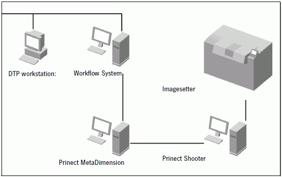

Prinect Shooter готов к подключению Системы рабочих процессов на базе JDF, такие как Prinect Integration Manager Гейдельберга. В конфигурации с Менеджером Интеграции вам нужен Prinect Renderer или Prinect MetaDimension RIP для создания данных скрининга Tiff-B.

Обмен данными между Prinect Integration Manager/Prinect Integration Manager S и Prinect MetaDimension основан на «Формате определения работы (JDF)». По этой причине программное обеспечение Prinect Shooter содержит «портал JDF», на котором настроен этот интерфейс.
В то время как обмен данными между диспетчером интеграции Prinect или диспетчером интеграции Prinect S осуществляется исключительно через портал JDF, для обмена данными между Prinect MetaDimension и Prinect Shooter можно настроить, как интерфейс FBDI будет использоваться в Prinect MetaDimension в диспетчере двигателей TIFF-B-Export. Если выход FBDI включен, Prinect MetaDimension создает документ JDF, содержащий все важные данные о работе для каждой работы, которую он отправляет в Prinect Shooter.
 Примечание: Вы можете подключить несколько Prinect Shooters к менеджеру интеграции или Prinect MetaDimension RIP. Таким образом, вы можете управлять несколькими Prinect Shooters с помощью подключенного снимка Гейдельберга с помощью только одной системы Prinect MetaDimension.
Примечание: Вы можете подключить несколько Prinect Shooters к менеджеру интеграции или Prinect MetaDimension RIP. Таким образом, вы можете управлять несколькими Prinect Shooters с помощью подключенного снимка Гейдельберга с помощью только одной системы Prinect MetaDimension.
Если вы хотите подключить фотосеттер Гейдельберга к системе рабочего процесса или RIP другого устройства через Prinect Shooter, этот RIP должен быть в состоянии генерировать данные TIFF-B. Используйте программное обеспечение «Prinect TIFF Toolbox» для проверки битовых карт TIFF-B и, при необходимости, подготовьте их так, чтобы они могли быть выведены с помощью Prinect Shooter, если это вообще возможно.
Prinect Shooter отправляет данные о состоянии изображения и любых ошибках устройства и т. д. в подключенную систему рабочего процесса. (Какая информация об устройстве отправляется, и можете ли вы отправить ее вообще, зависит от вашего подключенного устройства вывода).Для этого используется формат сообщений о работе (JMF). Напротив, менеджер интеграции Prinect или Prinect MetaDimension может, например, запустить перепечатку одного разделения в Prinect Shooter.
Кроме того, Prinect MetaDimension (но не Prinect Integration Manager/Prepress Manager S) может отправлять информацию о контексте работы одиночных разъединений в Prinect Shooter через веб-сайт. Протокол FBDI (см. Сортированный и несортированный выход).
Примечание: Вы можете следить за процессом визуализации в строке прогресса в списке заданий Prinect MetaDimension, если в Tiff-B Prinect MetaDimension включен «Надзорный выход FBDI». Менеджер двигателя. Другими словами, статус работы «сделан» только в том случае, если визуализация была успешно завершена. В случае неконтролируемого вывода FBDI или вывода без протокола FBDI в списке заданий Prinect MetaDimension статус «сделано», только если были созданы данные Tiff-B. Визуализация больше не может быть проверена в Prinect MetaDimension. Для этого необходимо запустить один из пользовательских интерфейсов Prinect Shooter (Printmanager или пользовательский интерфейс браузера).
Формат FBDI и формат JMF являются компонентами спецификации JDF. Благодаря поддержке JDF Prinect Shooter вписывается в общий рабочий процесс на основе JDF, который реализован в системе Heidelberg Prinect System.
Вы можете связать Prinect Shooter с сервером Prinect MDS, если Prinect Shooter запускается в системной среде Prinect с "Магистерская база данных" (MDS) (см. также Услуги Prinect). В этом случае Prinect Shooter отправляет информацию об устройстве в Магазин данных, чтобы эта информация была доступна из центрального источника в среде системы Prinect. Prinect Shooter также использует совместное управление пользователями Магазина данных (см. Структура разрешений Prinect (управляется в Магистерском хранилище данных)).
Copyright © 2013 Heidelberger Druckmaschinen AG